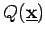
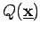
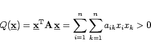
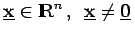
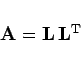
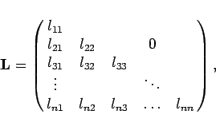
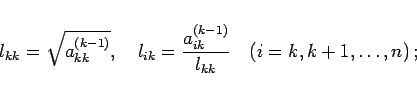
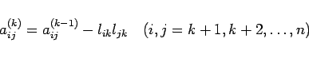
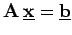

Inhalt Index DeskTop Bronstein

 Numerische Mathematik Numerische Lösung von Gleichungssystemen Lineare Gleichungssysteme
Numerische Mathematik Numerische Lösung von Gleichungssystemen Lineare Gleichungssysteme


In vielen Fällen ist in (19.26) die Koeffizientenmatrix  nicht nur symmetrisch, sondern auch positiv definit, d.h., für die zugehörige quadratische Form  gilt:
nicht nur symmetrisch, sondern auch positiv definit, d.h., für die zugehörige quadratische Form  gilt:
|  | (19.34) |
für alle . Da es zu jeder symmetrischen positiv definiten Matrix  eine eindeutige Dreieckszerlegung
eine eindeutige Dreieckszerlegung
|  | (19.35) |
mit
|  | (19.36a) |
|  | (19.36b) |
|  | (19.36c) |
gibt, kann die Lösung des zugehörigen linearen Gleichungssystems  nach dem CHOLESKY-Verfahren in folgenden Schritten durchgeführt werden: